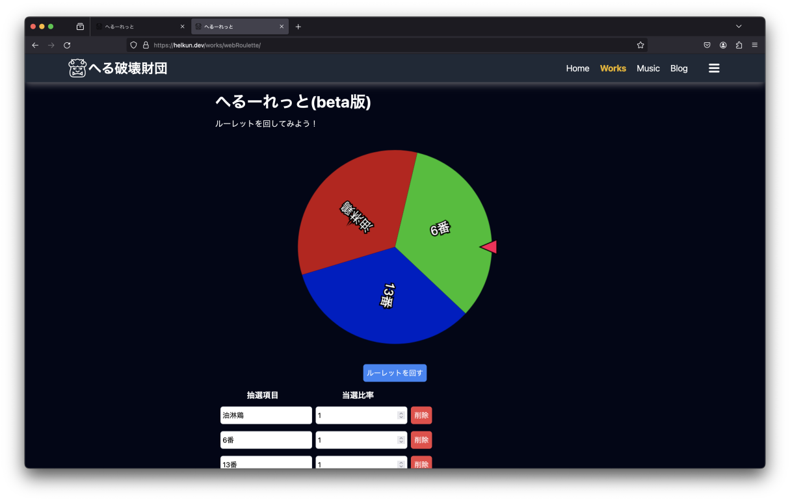
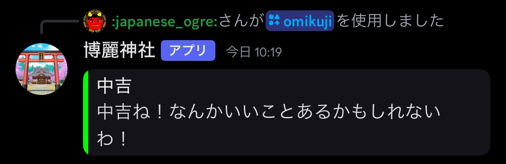
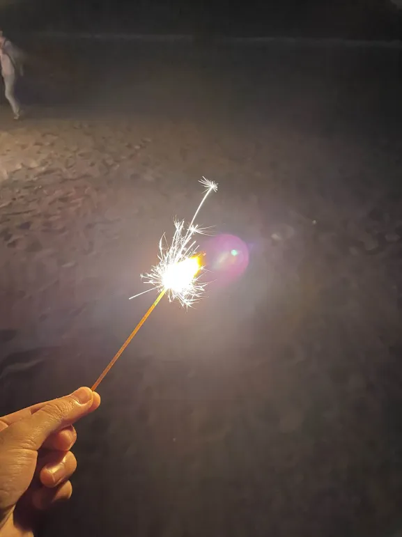
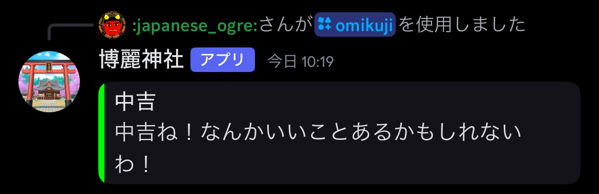
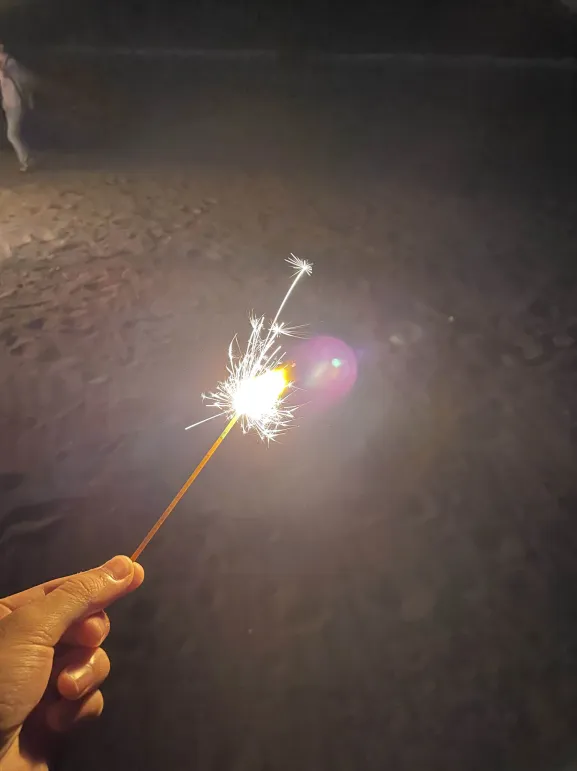

ソフトウェア
WitAqua
Created by とうふ
AndroidをベースにしたカスタムROMです。
まだ機能は少ないですが鋭意製作中です。
へるーれっと
Created by へるくん

へるーれっと！押すだけ！
webルーレット。自由に項目を追加したり、確率変更できたりできる
検討クリッカー
Created by かなえ

検討を加速させるクリッカーゲームです。
総理変わっちゃいましたね。
最安経路検索
Created by 淵野アタリ

入力した地点を繋ぐ最も安い経路を表示するWEBアプリ．
URL: https://hutinoatari.github.io/cheapTransfer/
博麗神社Bot
Created by へるくん

博麗神社Bot
VLLの初音神社に触発されて電々。通信(電通大の東方Project同好会サークル)用に突貫で作ったおみくじBot。
シークレット吉(内輪ネタ)が存在したり、10連おみくじコマンドも兼ね備えている
PetitQR [ポスター]
Created by McbeEringi
QRコード生成のJSライブラリです。依存関係は出力部分のみの利用かつ全て自家製ライブラリのPetitシリーズで閉じており、自作純度100%、外部のリソースに一切依存しません。
メソッドチェーンを前提に設計しており簡潔なコードで自由度の高い入出力が可能です。
PNG、SVG、KiCADフットプリント及びシンボルが出力可能です。
今回私の展示に用いられているQRコードは全てこのライブラリで生成しています。
PetitTrace [ポスター]
Created by McbeEringi
ラスタ画像をトレースしてベクタ形式で出力するJSライブラリです。
QRコードをSVGパスに変換することを目的で設計しました。
デフォルトの出力形式はSVGパスとKiCADのpts座標形式です。
全てのパスが閉じることを保証しており、レーザーカッターのパスや3Dデータの作成にも役立ちます。
任意のドット絵をSVGに変換可能です。
謎フレームワーク(仮称) [ポスター]
Created by McbeEringi
HTML等に限らずあらゆるファイルフォーマットが出力可能なフレームワーク?SSG?テンプレートエンジン?です。
自サイトを再構築することを目標に鋭意開発中です。
言語のラッパーを記述、これを用いてファイル本体を記述し、Blobを返すESMモジュールとして保持します。
Blobの代わりにObjectを用いて一つのファイルでディレクトリの一括管理も可能な設計です。
一般的なテンプレートエンジンと異なり、独自言語の習得が必要ない、テンプレートのパースを行わないので高速、バイナリファイルの出力及びテンプレート化が可能、等の点で優れています。
現時点でファイルの出力、HTMLのラッパー、ディレクトリのコピー、開発用のテストサーバの実装が完了し、自サイト予定地にて運用中です。
一筆書きプログラム
Created by カワウソ

.webp) 輪郭検出を行った後、最短経路を見つけ出すことで画像を一筆書きにできる。(性能はイマイチ)
輪郭検出を行った後、最短経路を見つけ出すことで画像を一筆書きにできる。(性能はイマイチ)
ハードウェア
アームロボ型クレーンゲーム
Created by 黒瀨(ほがらか)

名前の通りアームロボ型の新しい形のクレーンゲーム。
モナ工研のコーナーにあるよ！
ハンディファン
Created by ゆい

余ったCPUクーラーを再利用したもの
本体に破壊的変更をしないのがこだわり
Attiny X04開発ボード [実機展示]
Created by McbeEringi
比較的新しいAVRであるtinyAVR0シリーズの14ピンパッケージ、X04系列の開発基板です。
タクトスイッチ、LED、USBを可能な限り小さく詰め込みました。
Arduino互換機としての使用も可能ですぐに使い始めることができます。
USBはシリアル変換器を介してUARTポートにつながっていますが書き込み時にはUPDIに自動的に切り替わります。
同様のコンセプトでATmega4809の基板を設計中です。
超小型PDトリガ基板 [実機展示]
Created by McbeEringi
ノートPCのDCジャックを置き換えることを前提に設計した1cm角のPDトリガ基板です。
icにch221kを使用しており出力電圧は実装する抵抗の値で決定します。
4和音電子オルゴールプログラム [実機]
Created by McbeEringi
4つの減衰付き矩形波を同時に出力可能な電子オルゴールプログラムです。
譜面データは1Byte1命令、再生プログラムは1.3kB程度のため、2kBに譜面データ1つと再生プログラムが収まります。
乗算を使用していないため、古いATtinyシリーズでも動作します。
自サイトにMusicMacroLanguageで譜面の記述及び試聴が可能な環境が用意されており、簡単に譜面データを作成できます。
ファミコン相当の表現力を目標としており、今後の改良としてノイズチャンネルや三角波チャンネルの追加、条件分岐やループ等の制御命令やスラー命令の追加を検討しています。
クレーンゲーム
Created by ゆい
アルミフレームを使った小型クレーンゲーム
当日までに完成できるのか⁉️
このように様々な作品を展示しております。ぜひお越しください！
トップページへ戻る
入力した地点を繋ぐ最も安い経路を表示するWEBアプリ．
URL: https://hutinoatari.github.io/cheapTransfer/
博麗神社Bot
Created by へるくん

博麗神社Bot
VLLの初音神社に触発されて電々。通信(電通大の東方Project同好会サークル)用に突貫で作ったおみくじBot。
シークレット吉(内輪ネタ)が存在したり、10連おみくじコマンドも兼ね備えている
PetitQR [ポスター]
Created by McbeEringi
QRコード生成のJSライブラリです。依存関係は出力部分のみの利用かつ全て自家製ライブラリのPetitシリーズで閉じており、自作純度100%、外部のリソースに一切依存しません。
メソッドチェーンを前提に設計しており簡潔なコードで自由度の高い入出力が可能です。
PNG、SVG、KiCADフットプリント及びシンボルが出力可能です。
今回私の展示に用いられているQRコードは全てこのライブラリで生成しています。
PetitTrace [ポスター]
Created by McbeEringi
ラスタ画像をトレースしてベクタ形式で出力するJSライブラリです。
QRコードをSVGパスに変換することを目的で設計しました。
デフォルトの出力形式はSVGパスとKiCADのpts座標形式です。
全てのパスが閉じることを保証しており、レーザーカッターのパスや3Dデータの作成にも役立ちます。
任意のドット絵をSVGに変換可能です。
謎フレームワーク(仮称) [ポスター]
Created by McbeEringi
HTML等に限らずあらゆるファイルフォーマットが出力可能なフレームワーク?SSG?テンプレートエンジン?です。
自サイトを再構築することを目標に鋭意開発中です。
言語のラッパーを記述、これを用いてファイル本体を記述し、Blobを返すESMモジュールとして保持します。
Blobの代わりにObjectを用いて一つのファイルでディレクトリの一括管理も可能な設計です。
一般的なテンプレートエンジンと異なり、独自言語の習得が必要ない、テンプレートのパースを行わないので高速、バイナリファイルの出力及びテンプレート化が可能、等の点で優れています。
現時点でファイルの出力、HTMLのラッパー、ディレクトリのコピー、開発用のテストサーバの実装が完了し、自サイト予定地にて運用中です。
一筆書きプログラム
Created by カワウソ

輪郭検出を行った後、最短経路を見つけ出すことで画像を一筆書きにできる。(性能はイマイチ)
ハードウェア
アームロボ型クレーンゲーム
Created by 黒瀨(ほがらか)
名前の通りアームロボ型の新しい形のクレーンゲーム。
モナ工研のコーナーにあるよ！
ハンディファン
Created by ゆい